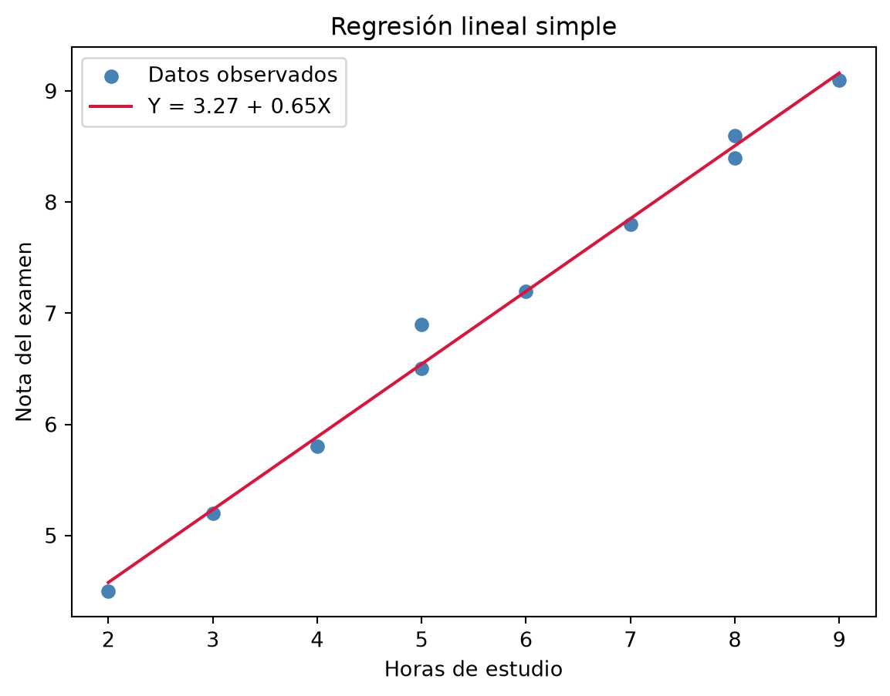
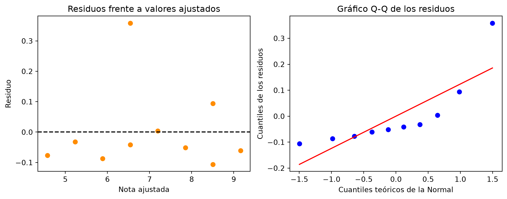

flowchart LR
A["Dos variables:<br/>X e Y"] --> B["Covarianza / Correlación<br/>¿van juntas?"]
B --> C["Regresión Lineal<br/>Y = β₀ + β₁X"]
C --> D["Contraste sobre β₁<br/>¿la relación es real o azar?"]
11 Correlación y Regresión Lineal
NotaObjetivos del módulo
- Medir la relación lineal entre dos variables con la covarianza y la correlación de Pearson.
- Medir relaciones monótonas con la correlación de Spearman.
- Ajustar una regresión lineal simple por mínimos cuadrados e interpretar sus coeficientes.
- Evaluar el ajuste con \(R^2\) y revisar los supuestos mediante los residuos.
- Contrastar si la pendiente es distinta de cero y construir su intervalo de confianza.
- Distinguir asociación de causalidad y reconocer los riesgos de extrapolar.
11.1 Introducción
Hasta ahora hemos trabajado con una sola variable a la vez: describirla (Módulo 1), modelar su incertidumbre (Módulos 2-3), y estimar o contrastar un parámetro suyo a partir de una muestra (Módulo 4). En este módulo damos un paso natural: ¿qué pasa cuando tenemos dos variables y queremos saber si están relacionadas?
Ejemplos típicos: horas de estudio y nota de un examen, inversión en publicidad y ventas, temperatura y consumo eléctrico. En todos ellos nos interesan dos preguntas distintas: ¿existe relación? (correlación) y, si la hay, ¿cómo la usamos para predecir? (regresión).
11.2 Covarianza y Correlación
La covarianza mide si dos variables tienden a moverse juntas (en la misma dirección o en direcciones opuestas):
\[ \text{Cov}(X, Y) = \frac{1}{n-1}\sum_{i=1}^{n}(x_i - \bar{x})(y_i - \bar{y}) \]
Su signo indica la dirección de la relación (positiva o negativa), pero su magnitud depende de las unidades de \(X\) e \(Y\), lo que dificulta comparar covarianzas entre distintos pares de variables. Para resolverlo, normalizamos con el coeficiente de correlación de Pearson:
\[ r = \frac{\text{Cov}(X, Y)}{s_X \, s_Y} \]
\(r\) siempre está entre \(-1\) y \(1\):
- \(r\) cercano a \(1\): relación lineal positiva fuerte.
- \(r\) cercano a \(-1\): relación lineal negativa fuerte.
- \(r\) cercano a \(0\): poca o ninguna relación lineal (¡ojo! podría haber una relación no lineal fuerte y aun así \(r \approx 0\)).
Código
from stats_toolkit import regression as reg
horas_estudio = [2, 3, 4, 5, 5, 6, 7, 8, 8, 9]
nota_examen = [4.5, 5.2, 5.8, 6.5, 6.9, 7.2, 7.8, 8.4, 8.6, 9.1]
r = reg.correlation(horas_estudio, nota_examen)
print(f"Correlación de Pearson: r = {r:.3f}")Correlación de Pearson: r = 0.996Correlación no implica causalidad. Que dos variables estén correlacionadas no significa que una cause la otra — puede haber una tercera variable oculta (variable de confusión), o la relación puede ser pura coincidencia en los datos disponibles. La correlación es una herramienta descriptiva, no una prueba causal.
11.2.1 Correlación de Spearman: relaciones monótonas
Pearson mide relaciones lineales y es sensible a los valores atípicos. Cuando la relación es monótona (siempre creciente o siempre decreciente) pero no lineal, o cuando las variables son ordinales, se usa el coeficiente de Spearman, \(\rho_s\): la correlación de Pearson calculada sobre los rangos de los datos (la posición de cada valor una vez ordenados; los empates reciben el rango medio). Si no hay empates, coincide con
\[ \rho_s = 1 - \frac{6\sum_{i=1}^{n} d_i^2}{n(n^2-1)}, \]
donde \(d_i\) es la diferencia entre los rangos de \(x_i\) e \(y_i\). Vale \(1\) si \(Y\) crece siempre que crece \(X\), aunque no lo haga en línea recta:
Código
import numpy as np
x = np.arange(1, 21)
y = np.exp(x / 3) # crece siempre, pero de forma exponencial
print(f"Pearson: r = {reg.correlation(x, y):.3f}")
print(f"Spearman: rho = {reg.spearman_correlation(x, y):.3f}")Pearson: r = 0.798
Spearman: rho = 1.000Un único valor atípico (30 horas de estudio y un 3 en el examen) basta para cambiar el signo de \(r\); \(\rho_s\) también baja, pero sigue siendo positiva:
Código
horas_atipico = horas_estudio + [30]
nota_atipico = nota_examen + [3.0]
print(f"Con un atípico -> Pearson: {reg.correlation(horas_atipico, nota_atipico):.3f}, "
f"Spearman: {reg.spearman_correlation(horas_atipico, nota_atipico):.3f}")Con un atípico -> Pearson: -0.395, Spearman: 0.493Para contrastar \(H_0\): no hay asociación monótona, se usa el estadístico \(t = \rho_s\sqrt{(n-2)/(1-\rho_s^2)}\) con \(n-2\) grados de libertad, una aproximación razonable a partir de unos 10 pares; es la que usa scipy.stats.spearmanr:
Código
from scipy import stats
rho, p_value = reg.spearman_test(horas_estudio, nota_examen)
ref = stats.spearmanr(horas_estudio, nota_examen)
print(f"stats_toolkit: rho = {rho:.3f}, p-valor = {p_value:.3g}")
print(f"scipy: rho = {ref.statistic:.3f}, p-valor = {ref.pvalue:.3g}")stats_toolkit: rho = 0.994, p-valor = 5.93e-09
scipy: rho = 0.994, p-valor = 5.93e-09Otro coeficiente basado en el orden es la \(\tau\) de Kendall (scipy.stats.kendalltau), que cuenta las parejas de observaciones ordenadas en el mismo sentido en ambas variables. Spearman y Kendall tampoco implican causalidad.
11.3 Regresión Lineal Simple
Mientras que la correlación solo nos dice cuán fuerte es la relación lineal, la regresión lineal va más allá: nos da un modelo concreto para predecir \(Y\) a partir de \(X\).
\[ Y = \beta_0 + \beta_1 X + \varepsilon \]
- \(\beta_0\) (intercepto): el valor esperado de \(Y\) cuando \(X = 0\) (solo es interpretable si ese valor tiene sentido y está dentro del rango de los datos).
- \(\beta_1\) (pendiente): cuánto difiere, en promedio, \(Y\) entre observaciones cuya \(X\) difiere en una unidad. Describe una asociación; solo admite una lectura causal si el diseño lo justifica (por ejemplo, un experimento).
- \(\varepsilon\) (error): la parte de \(Y\) que el modelo no explica.
El método de mínimos cuadrados ordinarios (OLS) encuentra los valores de \(\beta_0\) y \(\beta_1\) que minimizan la suma de los residuos al cuadrado, \(\sum_i (y_i - \hat{y}_i)^2\), y tiene una solución cerrada muy simple:
\[ \hat{\beta}_1 = \frac{\text{Cov}(X, Y)}{\text{Var}(X)} \qquad \hat{\beta}_0 = \bar{y} - \hat{\beta}_1 \bar{x} \]
Código
beta0, beta1 = reg.simple_linear_regression(horas_estudio, nota_examen)
print(f"Intercepto (β0): {beta0:.3f}")
print(f"Pendiente (β1): {beta1:.3f}")
print(f"Interpretación: cada hora extra de estudio se asocia con +{beta1:.2f} puntos en el examen")Intercepto (β0): 3.267
Pendiente (β1): 0.655
Interpretación: cada hora extra de estudio se asocia con +0.65 puntos en el examenCódigo
import matplotlib.pyplot as plt
import numpy as np
x_line = np.linspace(min(horas_estudio), max(horas_estudio), 100)
y_line = reg.predict(x_line, beta0, beta1)
plt.scatter(horas_estudio, nota_examen, color="steelblue", label="Datos observados")
plt.plot(x_line, y_line, color="crimson", label=f"Y = {beta0:.2f} + {beta1:.2f}X")
plt.xlabel("Horas de estudio")
plt.ylabel("Nota del examen")
plt.title("Regresión lineal simple")
plt.legend()
plt.show()
11.4 Bondad de Ajuste: \(R^2\)
¿Qué tan bien explica el modelo los datos? El coeficiente de determinación \(R^2\) mide qué proporción de la variabilidad total de \(Y\) queda explicada por el modelo:
\[ R^2 = 1 - \frac{\sum_i (y_i - \hat{y}_i)^2}{\sum_i (y_i - \bar{y})^2} \]
\(R^2\) va de 0 (el modelo no explica nada) a 1 (el modelo explica toda la variabilidad). En regresión lineal simple, \(R^2\) es exactamente el cuadrado del coeficiente de correlación de Pearson: \(R^2 = r^2\).
Código
r2 = reg.r_squared(horas_estudio, nota_examen, beta0, beta1)
print(f"R² = {r2:.3f} (r² = {r**2:.3f})")
print(f"El modelo explica el {r2*100:.1f}% de la variabilidad de la nota")R² = 0.992 (r² = 0.992)
El modelo explica el 99.2% de la variabilidad de la nota11.5 Supuestos del modelo y diagnóstico de residuos
La recta de mínimos cuadrados se puede calcular con cualquier conjunto de datos, pero el contraste y el intervalo de la sección siguiente solo son fiables si se cumplen, al menos aproximadamente, estos supuestos sobre los errores del modelo:
- Linealidad: la relación media entre \(X\) e \(Y\) es una recta.
- Independencia: los errores de distintas observaciones no están relacionados entre sí (por ejemplo, no hay medidas repetidas de la misma persona ni dependencia en el tiempo).
- Varianza constante (homocedasticidad): la dispersión alrededor de la recta es la misma para cualquier valor de \(X\).
- Normalidad de los errores: importante sobre todo con muestras pequeñas.
Como los errores no se observan, se examinan los residuos, \(e_i = y_i - \hat{y}_i\). En un gráfico de residuos frente a los valores ajustados no debería verse ningún patrón: una curva indica que la relación no es lineal, y un “embudo” (residuos cada vez más dispersos) indica que la varianza no es constante.
Código
from scipy import stats
ajustados = reg.predict(horas_estudio, beta0, beta1)
resid = reg.residuals(horas_estudio, nota_examen, beta0, beta1)
fig, axes = plt.subplots(1, 2, figsize=(10, 4))
axes[0].scatter(ajustados, resid, color="darkorange")
axes[0].axhline(0, color="black", linestyle="--")
axes[0].set_title("Residuos frente a valores ajustados")
axes[0].set_xlabel("Nota ajustada")
axes[0].set_ylabel("Residuo")
stats.probplot(resid, dist="norm", plot=axes[1])
axes[1].set_title("Gráfico Q-Q de los residuos")
axes[1].set_xlabel("Cuantiles teóricos de la Normal")
axes[1].set_ylabel("Cuantiles de los residuos")
plt.tight_layout()
plt.show()
Con solo 10 observaciones estos gráficos dan una orientación, no una prueba: no muestran problemas evidentes, pero tampoco pueden confirmar los supuestos.
Interpretación del intercepto y extrapolación. \(\hat{\beta}_0\) es la nota predicha para 0 horas de estudio, un valor que no aparece en los datos (el mínimo es 2 horas). Fuera del rango observado de \(X\) no sabemos si la relación sigue siendo lineal, así que las predicciones son extrapolaciones y deben tomarse con mucha cautela. Por eso el intercepto solo tiene una interpretación directa cuando \(X = 0\) es un valor posible y está dentro del rango de los datos.
11.6 ¿La relación es real o podría deberse al azar?
Aquí es donde reconectamos con el Módulo 4: \(\hat{\beta}_1\) es un estimador calculado a partir de una muestra, así que tiene su propio error estándar, y podemos plantear un contraste de hipótesis sobre él.
\[ H_0: \beta_1 = 0 \quad \text{(no hay relación lineal real)} \qquad H_1: \beta_1 \neq 0 \]
Si los errores \(\varepsilon\) del modelo son independientes, siguen una distribución Normal con media 0 y tienen la misma varianza para cualquier valor de \(X\), bajo \(H_0\) el estadístico sigue una distribución t de Student con \(n-2\) grados de libertad (perdemos 2 por estimar \(\beta_0\) y \(\beta_1\)). Fíjate en que lo que se supone normal no es la variable \(Y\) en su conjunto, sino su variación alrededor de la recta:
\[ t = \frac{\hat{\beta}_1}{SE(\hat{\beta}_1)} \]
Código
t_stat, p_value = reg.t_test_slope(horas_estudio, nota_examen, beta0, beta1)
print(f"t = {t_stat:.3f}, p-valor = {p_value:.3g}")
if p_value < 0.05:
print("p-valor < 0.05: rechazamos H0, la relación entre horas de estudio y nota es estadísticamente significativa")
else:
print("No hay evidencia suficiente de una relación lineal real")t = 31.057, p-valor = 1.26e-09
p-valor < 0.05: rechazamos H0, la relación entre horas de estudio y nota es estadísticamente significativaY, como en el Módulo 4, también podemos construir un intervalo de confianza para \(\beta_1\) en vez de limitarnos a un sí/no:
Código
lower, upper = reg.confidence_interval_slope(horas_estudio, nota_examen, beta0, beta1, confidence=0.95)
print(f"IC 95% para β1: ({lower:.3f}, {upper:.3f})")IC 95% para β1: (0.606, 0.704)
TipIdeas clave
- La correlación de Pearson mide la fuerza de una relación lineal: \(r \approx 0\) no excluye relaciones no lineales.
- La correlación de Spearman usa los rangos: mide relaciones monótonas y es más robusta frente a valores atípicos.
- La pendiente \(\hat{\beta}_1\) indica cuánto difiere en promedio \(Y\) por cada unidad de \(X\); describe una asociación, no un efecto causal.
- \(R^2\) es la proporción de la variabilidad de \(Y\) asociada al modelo; en regresión simple, \(R^2 = r^2\).
- La inferencia sobre la pendiente exige revisar los supuestos con los residuos.
- Predecir fuera del rango observado (extrapolar) es arriesgado.
11.7 Autoevaluación
Intenta responder cada pregunta antes de desplegar la respuesta.
1. La correlación de Pearson entre \(X\) e \(Y\) es \(r = 0{,}02\). ¿Significa que no hay ninguna relación entre ellas?
- Sí: las dos variables son independientes.
- No: no hay relación lineal apreciable, pero puede existir una relación no lineal fuerte.
- No: indica una relación lineal fuerte con una pendiente muy pequeña.
TipRespuesta
Respuesta correcta: b. No. Significa que no hay relación lineal apreciable. Puede existir una relación no lineal fuerte (por ejemplo, en forma de U). Por eso hay que mirar siempre el diagrama de dispersión.
2. En una regresión lineal simple, \(R^2 = 0{,}64\) y la pendiente es negativa. ¿Cuánto vale \(r\)?
- \(r = 0{,}64\)
- \(r = -0{,}64\)
- \(r = -0{,}8\)
- \(r = 0{,}8\)
TipRespuesta
Respuesta correcta: c. En regresión simple \(R^2 = r^2\), así que \(|r| = 0{,}8\); el signo es el de la pendiente: \(r = -0{,}8\).
3. Una regresión de ventas sobre publicidad (ambas en miles de euros) da \(\hat\beta_1 = 2{,}5\). ¿Cómo se interpreta?
- Por cada 1000 € más de publicidad, las ventas son en promedio 2500 € mayores, dentro del rango observado; describe una asociación.
- Por cada 1000 € más de publicidad, las ventas aumentan 2,5 €.
- Invertir 1000 € más en publicidad causa 2500 € más de ventas, sea cual sea el presupuesto.
- Las ventas son siempre 2,5 veces la inversión en publicidad.
TipRespuesta
Respuesta correcta: a. Por cada 1000 € más de publicidad, las ventas son en promedio 2500 € mayores, dentro del rango de datos observado. Describe una asociación: sin un diseño experimental no demuestra que la publicidad cause ese aumento.
4. El gráfico de residuos frente a los valores ajustados tiene forma de U. ¿Qué indica?
- Que el modelo es adecuado: los residuos se reparten a ambos lados de cero.
- Que la varianza de los errores crece con los valores ajustados.
- Que la relación no es lineal: habría que transformar las variables o usar otro modelo.
- Que hay un único valor atípico influyente.
TipRespuesta
Respuesta correcta: c. Que la relación no es lineal: el modelo sobrestima en el centro y subestima en los extremos (o al revés). Habría que transformar las variables o usar otro modelo; las inferencias del modelo lineal no son fiables.
5. ¿Cuándo preferirías la correlación de Spearman a la de Pearson?
- Cuando las dos variables son normales y la relación es lineal.
- Cuando la relación es monótona pero no lineal, hay valores atípicos influyentes o las variables son ordinales.
- Cuando la muestra es muy grande.
- Cuando se quiere estimar la pendiente de la recta de regresión.
TipRespuesta
Respuesta correcta: b. Cuando la relación es monótona pero no lineal, cuando hay valores atípicos influyentes o cuando las variables son ordinales (por ejemplo, puntuaciones de 1 a 5).
11.8 Cierre
En este módulo hemos pasado de analizar una variable a estudiar la relación entre dos variables numéricas: la covarianza y la correlación describen si se mueven juntas, la regresión lineal simple permite predecir una a partir de la otra, y el contraste y el intervalo de confianza sobre \(\beta_1\) conectan de nuevo con la inferencia del Módulo 4. Una relación estadísticamente significativa sigue siendo una asociación, no una prueba de causalidad.
El Módulo 6 completa las herramientas de comparación: qué hacer cuando hay más de dos grupos (ANOVA), cuando las variables son categóricas (test Chi-cuadrado) o cuando no es razonable suponer normalidad (pruebas no paramétricas).
Continúa con la práctica del módulo.